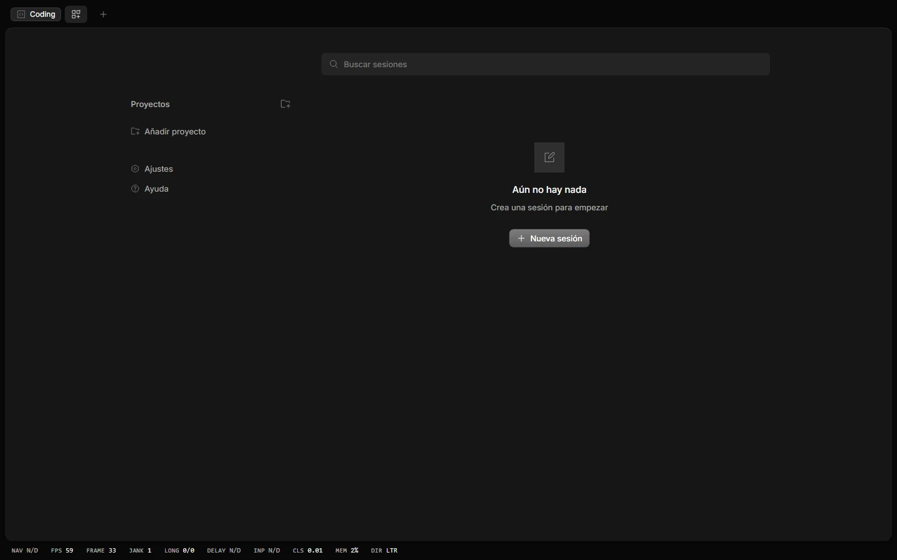

COMUNICADO DE PRODUCTOOCTUBRE 2026 · TIANCODE 1.0.0
Tu proyecto, tus herramientas. Un flujo de trabajo más claro.
Tiancode 1.0.0 empieza de nuevo con todo lo publicado hasta ahora y añade los modelos gratuitos de OpenCode, un asistente de bienvenida de 1200×850, la mascota en el chat y una vista previa que por fin se cierra.
LanzamientoOctubre 2026 · v1.0.0Canal de producción estable
PlataformaWindows 10 / 11 (64-bit)Instalador nativo y portable en USB
Arquitectura del núcleoLocal-First · TypeScript · SQLiteSesiones locales y 14 especialistas
Privacidad y ejecuciónModelos locales o proveedor elegidoEl destino de tus peticiones depende del proveedor
Filosofía
Los fundamentos del desarrollo soberano de IA
La mayoría de herramientas de programación con IA tratan a tu ordenador como un cliente ligero para servidores remotos, exponiendo propiedad intelectual, introduciendo latencia de red y atándote a costes de suscripción en la nube. Tiancode invierte este paradigma: tu máquina es el motor de ejecución.
Capacidades
Lo que Tiancode hace hoy
Nueve áreas verificadas en la versión 1.0.0, de los modelos gratuitos al control visual de Windows.
01 / CHAT Y AGENTES
Chat al estilo Claude Code y 14 especialistas
Modos de permiso que cambian en plena tarea, esfuerzo hasta Ultracode y mensajes en cola editables. El agente delega en 14 sub-agentes que configuras uno a uno.
02 / MODELOS GRATUITOS
Modelos gratuitos de OpenCode
El grupo «OpenCode Free» con un interruptor general y otro por modelo. La lista sigue el catálogo de OpenCode y se actualiza cada hora.
03 / MOTOR LOCAL
Modelos locales GGUF
Explorador de Hugging Face con el tamaño real de cada cuantización y carga automática según tu VRAM y RAM. Usa llama.cpp, Ollama o LM Studio.
04 / EXTENSIONES
Descubrir y conectores
Unas 3600 extensiones (plugins de Claude Code y Codex, skills y servidores MCP) y cerca de 300 conectores de apps, instalables con un clic.
05 / USO DE LA PC
Uso visual de Windows
El modelo observa capturas y el contexto de UI Automation, hace clic, arrastra y escribe. Una luz azul indica el control activo y «Detener ahora» lo corta.
06 / VISTA PREVIA
Sandbox y vista en vivo
El agente arranca y revisa el servidor de tu app, inspecciona la página aislada y repara una pantalla en blanco. El modo diseño manda un elemento al chat.
07 / INTELIGENCIA
Memoria, contexto y protección
Memoria del usuario y del proyecto, búsqueda en sesiones anteriores, compactación del contexto, CodeGraph y AgentShield para los comandos críticos.
08 / VOZ Y MASCOTAS
Voz y mascota en el chat
Dictado con Whisper en tu equipo y lectura con Kokoro, Piper o Fish Audio. Tu mascota aparece junto a cada paso del chat con la expresión de lo que hace el modelo.
09 / CONEXIONES Y CLI
Avisos, GitHub y CLI
Avisos de fin de tarea en Telegram, Discord, Slack o webhooks firmados, GitHub en la app y un CLI para Windows, macOS y Linux.
La app
Así se ve Tiancode 1.0.0
Capturas reales de la aplicación de escritorio. Cambia de pantalla, pasa el cursor por los puntos y descubre cada zona antes de instalar.
Tiancode · InicioInterfaz de Tiancode

Versión 1.0.0
Qué cambia en esta versión
Funciones conectadas al trabajo real, con correcciones y pruebas disponibles en el repositorio.
Modelos y especialistas
1.0.0
FreeLa lista de modelos gratuitos sigue el catálogo de OpenCode.
WindowsInstalador y portable para Windows x64.
SHA-256Metadatos y binarios verificados antes de publicar.
Ingeniería
Historial local y ejecución coordinada
Un monorepo en TypeScript puro impulsado por Bun, Effect-TS, SolidJS y SQLite.
Persistencia con límites claros
Tiancode Desktop conserva sus conversaciones y configuración en el equipo y utiliza el servidor V1. El repositorio también incluye un núcleo V2 en desarrollo, con un coordinador de sesiones y admisión durable de entradas.
En V2, las entradas se guardan en SQLite antes de activar el coordinador. Las instrucciones nuevas se incorporan en límites seguros de turno y las entradas en cola esperan a que la sesión esté disponible. Tras un fallo del proceso, el trabajo del proveedor requiere una continuación explícita.
Gratuito para uso personal. Elige el formato de instalación que mejor se adapte a tu flujo de trabajo.
Recomendado
Instalador oficial de Windows
Configuración estándar de Windows con accesos directos de escritorio, integración en la bandeja del sistema y actualizaciones automáticas en segundo plano.
Actualizaciones automáticas que conservan tus datos
Menú Inicio y accesos directos de escritorio
Notificaciones nativas del sistema e icono en la bandeja
App de escritorioEn preparación. tiancode web abre la misma interfaz en el navegador.
npmVersión anterior; para 1.0.0 usa PowerShell, curl o Homebrew.
npm install -g tiancode-ai
bunVersión anterior; para 1.0.0 usa PowerShell, curl o Homebrew.
bun install -g tiancode-ai
HomebrewmacOS y Linux.
brew install Dreftian/tap/tiancode
Arch Linux (AUR)Paquete en preparación; usa el comando curl mientras tanto.
paru -S tiancode-bin
Después de instalar: tiancode abre la interfaz de terminal en la carpeta actual, tiancode web el servidor con interfaz web y tiancode run "…" una petición directa.
Sumas de verificación de integridad SHA-256 disponibles en losReleases de GitHub.
Preguntas frecuentes
Preguntas frecuentes
Lo esencial sobre Tiancode, los modelos gratuitos y locales y tu privacidad.
No. Puedes activar los modelos gratuitos de OpenCode o, para trabajar sin conexión, descargar un modelo GGUF en Modelos Locales. Las claves de proveedores (OpenAI, Anthropic, Google, DeepSeek y otros) son opcionales.
Tiancode no tiene telemetría ni servidores intermedios propios. Con modelos locales todo ocurre en tu equipo; con un proveedor, las peticiones van a ese proveedor con tu clave. Los modelos gratuitos de OpenCode pasan por OpenCode Zen, y algunos pueden usar los datos durante su periodo gratuito.
Para modelos en la nube basta cualquier Windows 10 u 11 de 64 bits. Para modelos locales, Tiancode lee cada GGUF antes de descargarlo y te dice si cabe en tu VRAM y RAM; el motor usa la GPU con Vulkan o la CPU.
Sí. Las sesiones se guardan en SQLite en tu equipo y las actualizaciones conservan claves, ajustes, sesiones y autenticación MCP. Ajustes › General › Datos crea y restaura copias de seguridad.
Sí. Descubrir reúne unas 3600 extensiones y Conectores cerca de 300 apps, y en Ajustes › MCP y Plugins añades cualquier servidor MCP local (stdio) o remoto (HTTP o SSE, con OAuth). También con tiancode mcp.
El CLI sí: interfaz de terminal, servidor y tiancode web con la misma interfaz en el navegador. La app de escritorio nativa para macOS y Linux está en preparación.
Tiancode es software libre: puedes usarlo, modificarlo y distribuirlo libremente bajo los términos de la Licencia MIT.
Resumen en palabras simples
Uso libre, personal y comercial, sin costes ni licencias adicionales.
Puedes modificar el código fuente y crear tus propias versiones.
Puedes redistribuir copias, con la condición de incluir el aviso de copyright.
El software se entrega «tal cual», sin garantía de ningún tipo.
Aviso de copyright
Copyright (c) 2026 Tiancode
Texto completo de la licencia
MIT License
Copyright (c) 2026 Tiancode
Permission is hereby granted, free of charge, to any person obtaining a copy
of this software and associated documentation files (the "Software"), to deal
in the Software without restriction, including without limitation the rights
to use, copy, modify, merge, publish, distribute, sublicense, and/or sell
copies of the Software, and to permit persons to whom the Software is
furnished to do so, subject to the following conditions:
The above copyright notice and this permission notice shall be included in all
copies or substantial portions of the Software.
THE SOFTWARE IS PROVIDED "AS IS", WITHOUT WARRANTY OF ANY KIND, EXPRESS OR
IMPLIED, INCLUDING BUT NOT LIMITED TO THE WARRANTIES OF MERCHANTABILITY,
FITNESS FOR A PARTICULAR PURPOSE AND NONINFRINGEMENT. IN NO EVENT SHALL THE
AUTHORS OR COPYRIGHT HOLDERS BE LIABLE FOR ANY CLAIM, DAMAGES OR OTHER
LIABILITY, WHETHER IN AN ACTION OF CONTRACT, TORT OR OTHERWISE, ARISING FROM,
OUT OF OR IN CONNECTION WITH THE SOFTWARE OR THE USE OR OTHER DEALINGS IN THE
SOFTWARE.
La licencia MIT se aplica al código de la aplicación Tiancode. Los modelos de IA descargados a través de la app conservan sus propias licencias (normalmente abiertas, como Apache 2.0, MIT o Llama 3).
Los términos que rigen el uso de Tiancode. Al descargar o utilizar la aplicación aceptas estas condiciones.
Última actualización: 9 de octubre de 2026
1. Aceptación de los términos
Al descargar, instalar o utilizar Tiancode (la «aplicación») aceptas estos Términos de uso. Si no estás de acuerdo con ellos, no utilices la aplicación.
2. Uso del software
Tiancode está pensado para desarrolladores y personas que escriben código. Puedes usarlo con fines personales y profesionales. Te comprometes a no utilizarlo para actividades ilegales, dañinas o que infrinjan derechos de terceros.
3. Uso responsable de la IA
Los agentes de Tiancode generan código y texto mediante modelos de inteligencia artificial. Los resultados pueden contener errores, vulnerabilidades de seguridad o código incorrecto. Eres responsable de revisar, probar y validar cualquier código generado antes de usarlo en producción.
No utilices la aplicación para generar contenido ilegal, malicioso o que pueda causar daño, y no confíes ciegamente en las respuestas de la IA: verifica siempre lo que produce.
4. Propiedad del código generado
El código, el texto y las demás salidas que generes con Tiancode te pertenecen. Puedes usarlos, licenciarlos o publicarlos libremente, incluso en proyectos comerciales. Tiancode no reivindica ninguna propiedad sobre tus resultados.
5. Proveedores de terceros
Cuando conectas proveedores de IA en la nube (OpenAI, Anthropic, etc.), tu uso se rige también por los términos y políticas de esos proveedores. Tiancode actúa como cliente de sus APIs y tus claves se guardan únicamente en tu equipo.
6. Sin garantías
La aplicación se proporciona «tal cual», sin garantías de ningún tipo, expresas o implícitas, incluyendo disponibilidad, idoneidad para un fin o ausencia de errores.
7. Limitación de responsabilidad
En la máxima medida permitida por la ley, Tiancode no será responsable de daños directos, indirectos, incidentales o consecuentes derivados del uso de la aplicación, incluyendo pérdida de datos, pérdida de beneficios o fallos producidos por código generado con ella.
8. Cambios en estos términos
Podemos actualizar estos términos ocasionalmente. La versión vigente se publica siempre en esta página con su fecha de actualización.
9. Contacto
Si tienes preguntas sobre estos términos, escríbenos a legal@tiancode.dev.
Tiancode está diseñado con la privacidad por delante: por defecto, tus datos y tu código se procesan en tu propia máquina.
Última actualización: 9 de octubre de 2026
1. Procesamiento local
Tiancode es una aplicación de escritorio. Tus conversaciones, tu código y tu configuración se almacenan y procesan localmente en tu equipo. No mantenemos servidores que reciban tu actividad.
2. Modelos locales
Si usas modelos locales GGUF, la inferencia se ejecuta íntegramente en tu máquina. Ni tus mensajes ni los resultados salen de tu equipo: cero envíos de datos.
3. Proveedores en la nube
Si decides conectar un proveedor en la nube (OpenAI, Anthropic u otros), tus mensajes se envían a ese proveedor para obtener respuestas, conforme a sus propias políticas de privacidad. La elección es siempre tuya y puedes volver a modelos locales en cualquier momento. Tu clave API se guarda solo en tu equipo.
4. Sin telemetría
Tiancode no envía estadísticas de uso ni telemetría. Solo se conecta a los proveedores de modelos que configures, a OpenCode Zen si activas sus modelos gratuitos, a Fish Audio si eliges sus voces, a los canales de avisos y servidores MCP que añadas, a Hugging Face al descargar modelos, y a GitHub y los registros de Descubrir para buscar actualizaciones y catálogos.
5. No vendemos datos
No vendemos, alquilamos ni compartimos tus datos personales con terceros. Tiancode no tiene un modelo de negocio basado en tus datos: es un producto de software.
6. Dónde se guarda la información
Toda la información vive en tu equipo:
Configuración, claves API y conversaciones:%APPDATA%\ai.tiancode.desktop.release(instalador de GitHub) o junto al ejecutable (portable)
Modelos locales:modelsen el directorio de datos; se cambia en los ajustes del motor
Registros y diagnóstico:logsen la carpeta de datos, solo para resolver incidencias
7. Tus derechos
Como todo se guarda en tu equipo, controlar tus datos es directo: desinstala la aplicación o elimina su carpeta de datos para borrarlo todo. También puedes eliminar conversaciones individuales desde la interfaz.
La guía oficial de Tiancode: instalación, agentes, skills, modelos locales, configuración, comandos, arquitectura y solución de problemas.
Uso visual de la PC · 1.0.0
El modelo observa tu pantalla, elige una acción y comprueba el resultado. Ventanas, clics, arrastre, teclado y desplazamiento, con compatibilidad para acciones de UI-TARS.
En Ajustes › Uso de la PC › Escritorio, elige el monitor y configura los permisos. Pide una tarea en el chat; autoriza la aplicación cuando Tiancode te muestre su nombre.
Selecciona un modelo con visión y herramientas. Recibe capturas y contexto de los controles accesibles de Windows; no necesitas un segundo agente ni descargar los pesos de UI-TARS.
La luz azul en los bordes de todos los monitores indica control activo. Detener o el atajo de la barra corta la acción y suelta el ratón. El interruptor principal y los ejecutables vetados siguen aplicándose.
Ejemplo: abre la Calculadora, calcula 23 × 17 y comprueba el resultado antes de terminar.
Control nativo en Windows. UI Automation depende de cada aplicación. Los operadores remotos y Android de UI-TARS requieren servicios adicionales que esta versión no incorpora.
Captura real de la prueba de Windows: aplicación aislada, operador nativo de Tiancode y luz azul de control activo.
1. Instalación
Tiancode 1.0.0 se distribuye en dos formatos para Windows 10 y 11 (64 bits):
Instalador NSIS (Tiancode.exe, ~343 MB): se instala en un clic, con accesos directos y actualizaciones automáticas.
Versión portable (Tiancode-portable.exe, ~343 MB): sin instalación, se ejecuta desde cualquier carpeta o USB.
Requisitos: Windows 10 u 11 de 64 bits. Para modelos locales, Tiancode calcula antes de descargar si cada modelo cabe en tu VRAM y RAM.
2. Agentes
El agente Build trabaja en tu proyecto con herramientas para leer, editar y parchear archivos, buscar, usar la shell y la web. Plan solo lee y propone, y Web App crea interfaces. Además delega en 14 sub-agentes especialistas.
$ tiancode --agent plan
Cada especialista se edita en Ajustes › Sub-agentes (modelo, temperatura, pasos, permisos por herramienta, instrucciones y color) y se llama con @ en la conversación.
3. Skills
Tiancode incluye más de 130 skills de ingeniería: TDD, revisión de código, seguridad y pentesting, rendimiento, CI/CD, Docker, Playwright, bases de datos, diseño de interfaces, planificación y más. El agente elige la adecuada por sí solo.
Ajustes › Skills tiene buscador, filtros con recuento y una ficha con tipo, origen, uso y ubicación, y permite importar skills desde GitHub; Descubrir añade las de Anthropic y Codex.
4. Modelos locales
Desde la pestaña Modelos Locales buscas y descargas modelos GGUF de Hugging Face. El flujo completo:
Abre Ajustes › Modelos Locales › Explorar y busca un modelo de Hugging Face.
Elige una cuantización: la lista muestra el tamaño real de cada archivo.
Tiancode lee la cabecera GGUF, calcula la VRAM y la RAM que necesita en tu equipo y propone la configuración de carga.
Descarga el archivo: la descarga se reanuda si la conexión se corta, y la pestaña «En disco» lista los modelos que tienes.
Elige el modelo en el chat: el motor arranca solo con esa configuración.
La compatibilidad se calcula contra tu VRAM (pesos y caché KV) y tu RAM. Las cuantizaciones menores (Q4_K_M, Q3_K_L, IQ*) ocupan menos.
El motor es llama.cpp con aceleración Vulkan o en CPU; Tiancode también usa Ollama y LM Studio si están en marcha. La carpeta de modelos se cambia en los ajustes del motor.
5. Configuración
Ajustes se organiza en cuatro grupos (Escritorio, Servidor, Extensiones e Integraciones) con un buscador global. General reúne Chat, Vista, Espacio de trabajo, Escritorio y Datos; Proveedores y Modelos activan los modelos gratuitos de OpenCode.
La escala de la interfaz va del 80 % al 120 % y los atajos Ctrl + «+» y Ctrl + «−» recorren los mismos pasos. El asistente de bienvenida se puede volver a abrir desde Ajustes › General.
6. Comandos
El CLI de Tiancode funciona en Windows, macOS y Linux:
tiancode # interfaz de terminal en la carpeta actual
tiancode run "..." # una petición directa (-m proveedor/modelo)
tiancode web # servidor + interfaz web en el navegador
tiancode serve # servidor headless
tiancode models opencode # modelos gratuitos de OpenCode
tiancode providers login # guarda la clave de un proveedor
tiancode --version # versión instalada
7. Solución de problemas
El modelo local va lento: elige una cuantización menor (Q4 en lugar de Q8), un modelo más pequeño o el modo ligero del chat.
La descarga de modelos falla: comprueba la conexión y el espacio libre en la carpeta de modelos.
No conecta con el proveedor: revisa la clave en Ajustes › Proveedores; si un modelo gratuito avisa de límite, conecta tu clave de OpenCode Zen.
La app no arranca en modo portable: asegúrate de tener permisos de escritura en la carpeta.
¿Sigue el problema? Abre una incidencia adjuntando los logs de la carpeta de datos.
8. Arquitectura del proyecto
Tiancode es un monorepo en TypeScript con estas carpetas principales:
Tiancode/
├─ frontend/·frontend: la app SolidJS, el escritorio Electron, session-ui, el sistema de diseño y este sitio web.
├─ backend/·backend: el servidor y CLI (tiancode), core, protocolo, schema y SDK.
├─ skills/·skills: más de 130 skills de ingeniería en markdown.
├─ tools/·tools: scripts de publicación de la app, el CLI, Homebrew y la web.
└─ packages/ · commands/·packages y commands: el plugin y el SDK publicados y los comandos integrados.
Bun
TypeScript
SolidJS
Electron
Effect
Turborepo
216 e2e
Tiancode está construido con Bun, TypeScript, SolidJS, Electron y Effect, y se orquesta con Turborepo. Cada paquete tiene sus propias pruebas.
Pon Tiancode en marcha en menos de cinco minutos, paso a paso.
1
Descarga Tiancode
Elige el instalador NSIS (~343 MB) o la versión portable (~343 MB) desde la página de descarga. La versión 1.0.0 soporta Windows 10 y 11.
2
Instala o ejecuta
Con el instalador: ejecútalo y se instala en un clic. Con la portable: coloca el ejecutable en una carpeta y ábrelo; no requiere instalación.
3
Elige tu modelo
Activa los modelos gratuitos de OpenCode, añade la clave de un proveedor en Ajustes › Proveedores o descarga un modelo GGUF en Modelos Locales: Tiancode te dice si cabe en tu equipo.
4
Crea tu primer chat
Abre un chat nuevo y haz tu primera petición: analiza tu proyecto, explica un fragmento o escribe una función. Cambia el modo de permisos cuando quieras.
5
Skills y sub-agentes
El agente elige las skills por sí solo; en Ajustes › Skills las buscas y filtras, y en Ajustes › Sub-agentes editas a los 14 especialistas.
6
Ajusta a tu gusto
Ajusta tema, idioma, escala de la interfaz, tamaño de la conversación, pestañas y atajos en Ajustes. Todo se guarda en tu equipo.
¿Prefieres los detalles? Consulta la documentación completa o las preguntas frecuentes.
Lo esencial sobre Tiancode, los modelos gratuitos y locales y tu privacidad.
Tiancode no tiene telemetría ni servidores intermedios propios. Con modelos locales GGUF todo ocurre en tu equipo; con un proveedor en la nube, las peticiones van a ese proveedor con tu clave. Los modelos gratuitos de OpenCode pasan por OpenCode Zen.
Tiancode lee cada GGUF antes de descargarlo y te dice cuánta VRAM y RAM necesita en tu equipo, y ajusta automáticamente la carga (contexto, capas en GPU, hilos). El motor llama.cpp usa la GPU con Vulkan o la CPU.
El dictado usa Whisper en tu equipo. La lectura de respuestas usa voces locales Kokoro y Piper en español o, con tu clave, Fish Audio en la nube, y elige la voz según el idioma de cada texto.
Sí. Tiancode ofrece un binario portable (Tiancode-portable.exe) que encapsula todas sus dependencias y guarda la configuración, sesiones y modelos en una carpeta contigua, permitiéndote programar en cualquier equipo con Windows 10 u 11.
Tiancode es cliente MCP local (stdio) y remoto (HTTP o SSE, con OAuth). Descubrir reúne unas 3600 extensiones, Conectores cerca de 300 apps, y puedes añadir tus propios servidores en Ajustes › MCP y Plugins o con tiancode mcp.
Las sesiones, ajustes y claves se guardan en tu equipo: en el perfil de la app (%APPDATA%\ai.tiancode.desktop.release con el instalador de GitHub) o junto al ejecutable en modo portable. Ajustes › General › Datos muestra la carpeta en uso.
Sí. Edita los 14 especialistas (modelo, temperatura, permisos, instrucciones y color) en Ajustes › Sub-agentes, añade skills propias en tu carpeta de skills o impórtalas desde GitHub, y deja que el agente cree skills nuevas.
No. Los modelos en la nube y los gratuitos de OpenCode no necesitan GPU, y los modelos locales también funcionan en CPU. Con una GPU compatible con Vulkan, el motor la aprovecha.
Sí. Tiancode es multi-proveedor: combina modelos en la nube (OpenAI, Anthropic y otros) con modelos locales y cambia de uno a otro en cada conversación.
Con el instalador, ejecuta el nuevo instalador y tus datos se conservan. En modo portable, sustituye el ejecutable por la nueva versión: la configuración permanece en su carpeta.
Cada cuantización muestra la VRAM y la RAM que necesita en tu equipo antes de descargarla (Tiancode lee la cabecera GGUF remota) y propone la configuración de carga automática.
En Ajustes › Sub-agentes busca el especialista y edita su modelo, temperatura, pasos máximos, permisos por herramienta, instrucciones y color, o ocúltalo del menú @. Después llámalo con @ en cualquier conversación.
Tiancode vuelve a empezar en 1.0.0 con todo lo nuevo: modelos gratuitos de OpenCode, un asistente de bienvenida más completo, la mascota en el chat y una vista previa que se cierra.
Versión 1.0.0
Última versión7 de octubre de 2026
Modelos gratuitos, bienvenida completa y mascota en el chat
Modelos gratuitos de OpenCode: el grupo «OpenCode Free» (Big Pickle, Exo, Fledge Alpha, Ling, LongCat, MiMo, Muse Spark, Nemotron, Space Bunny…) con un interruptor general y otro por modelo.
La lista de modelos gratuitos sigue el catálogo de OpenCode y se actualiza sola cada hora.
Asistente de bienvenida de 1200×850 con seis pasos: idioma y tema, escala de la interfaz, tamaño y ancho de la conversación, pestañas, línea de tiempo, modelos y cómo empezar.
La mascota aparece junto a Pensando, Explorando, Editar, Escribir y Shell, con la expresión de lo que hace el modelo.
De opencode 1.18.35: las imágenes de los resultados de herramientas llegan a xAI y los formatos que rechaza se omiten.
El CLI avisa de los reintentos del proveedor y ya no se queda esperando en silencio cuando la espera es larga.
Incluye todo lo publicado de 1.0.1 a 1.0.8: Descubrir, conectores, uso visual de Windows, modelos locales e Inteligencia.
Mejoras
La escala de la interfaz elegida en la bienvenida se aplica al momento y se conserva en la app.
El asistente se adapta a pantallas pequeñas y a móvil, y desde Ajustes se repasa con lo ya guardado.
En Ajustes, las filas con un solo interruptor ya no saltan de línea en paneles estrechos.
El aviso de límite gratuito nombra OpenCode Go y permite conectar tu clave de OpenCode Zen.
La actualización conserva claves, sesiones, ajustes, copias de seguridad y autenticación MCP.
Correcciones
Cerrar la vista previa ya no la vuelve a abrir en bucle, ni con una web ni con una app.
Cerrar el Sandbox mientras el agente mira la página ya no lo reabre al instante.
tiancode run termina con el motivo y código 1 cuando el proveedor pide esperar más de dos minutos.
Tiancode donde lo necesites: sin instalación, con tu configuración a cuestas.
La versión portable (Tiancode-portable.exe, ~343 MB) ejecuta la aplicación completa sin instalarla. Es la misma Tiancode, pero todo — el ejecutable, la configuración y los modelos — vive en la carpeta que tú elijas.
Por qué elegir la versión portable
Sin instalación y sin permisos de administrador.
Llévala en un USB y úsala en cualquier PC con Windows 10 u 11.
Tu configuración, agentes, skills y conversaciones viajan contigo.
No deja rastro en el equipo anfitrión: todo vive en su carpeta.
Actualizar es tan simple como sustituir un archivo.
Primeros pasos
1
Descarga
Obtén Tiancode-portable.exe desde la página de descarga.
2
Coloca
Crea una carpeta (por ejemplo D:\Tiancode o tu USB) y pon el ejecutable dentro.
3
Ejecuta
Lanza el exe: Tiancode detecta el modo portable y guarda sus datos en esa misma carpeta.
4
Programa
Descarga modelos, configura tus proveedores y sigue programando donde quieras.
Consejo: los modelos GGUF pueden ocupar varios gigabytes. Si viajas con poco espacio, guarda los modelos en tu equipo y usa la versión portable solo para la configuración y las conversaciones.
Tiancode 1.0.0 para Windows 10 y 11 (64 bits). Gratis, sin registro. El instalador y la versión portable son el mismo software: elige el que mejor se adapte a tu flujo.
v1.0.0~343 MB
Instalador de Windows
Instalador NSIS en un clic. Ideal para uso diario: incluye accesos directos y actualizaciones automáticas.